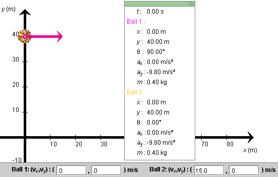
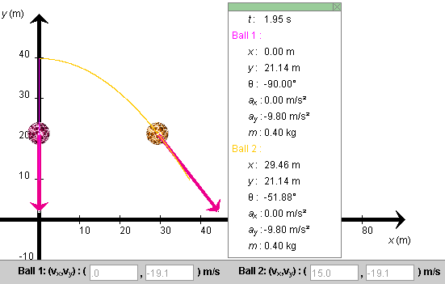

Instructions
This page is designed to get you started using the applet. The applet should be open. The step-by-step instructions on this page are to be done in the applet. You may need to toggle back and forth between instructions and applet if your screen space is limited.
 The Balls' Positions and
Velocities
The Balls' Positions and
Velocities
 Setting a Target and Measuring Point
Coordinates
Setting a Target and Measuring Point
Coordinates
Exercise 1. RESET  the applet.
the applet.
Set the positions and velocities of the two balls to
(x,y)1 =
(x,y)2 = (0, 40.0) m.  (1a)
(1a)
(vx ,vy)1 =
(0, 0) m/s,  (vx
,vy)2 = (15.0, 0) m/s,
(vx
,vy)2 = (15.0, 0) m/s,
 (1b)
(1b)
Figure 1 below shows this configuration. Instructions on how to make these settings are given below Figure 1.

Figure 1
Instructions on setting the initial positions and velocities. Display the Data box. Click on the red ball (Ball 1) and, while holding the Shift key down, drag it up the y-axis to (x,y) = (0, 40.0) m. The exact coordinates of the balls are displayed in the Data box.
Move the yellow ball (Ball 2) to the same position as Ball 1. It is easier to adjust one coordinate at a time. Drag the ball to x = 0 without worrying about the y-coordinate. Then, while holding down the Shift key, drag the ball to y = 40 m.
Set the initial velocities of the two balls by typing the values in Eqs. (1b) into the velocity data fields and pressing ENTER.
Exercise 2. You can adjust the initial velocity of a ball also by dragging the tip of the ball's velocity vector, if the vector is displayed. Try it with Ball 2. Observe how the velocity components in the velocity data fields for Ball 2 change as you drag the tip of the velocity vector.
In the present situation, both balls are in the same location. Make their velocity vectors equal as well by setting the velocity components in the velocity data fields of both balls equal to (vx, vy) = (15.0, 0) m/s. Make sure that both balls are still in the same position at (x,y) = (0, 40.0) m.
The applet "focuses" on one ball and its velocity vector. The ball that was dragged last is the one that has focus. If you drag the common tip of the two velocity vectors, the velocity of the ball that has focus will be changed. Similarly, clicking at the common location of both balls and dragging will cause the ball with focus to be dragged. To switch the focus from one ball to the other, double-click anywhere in the applet window.
Try this. Drag the common tip of the velocity vector and observe which velocity is affected by looking at the velocity data fields. Restore this velocity to its original setting. Then double-click somewhere in the applet window, and drag the common tip of the velocity vector again. It should be the other ball's velocity that gets changed this time.
Try the same with dragging the balls.
Exercise 3. Display a coordinate grid by clicking the
Grid toggle button  . The Grid can be helpful in setting a ball's position
or in measuring a ball's trajectory. Hide the Grid by
deselecting the Grid button by clicking the button again.
. The Grid can be helpful in setting a ball's position
or in measuring a ball's trajectory. Hide the Grid by
deselecting the Grid button by clicking the button again.
Exercise 4. Display the Data box. Restore the ball's initial velocities and positions as in Eqs.(1), and PLAY the motion. Display the balls' paths by pressing the Trace toggle button. If you PAUSE the motion at or near t = 1.95 s, you should be able to see the configurations and trajectories shown in Figure 2 below. The red ball's trajectory is superimposed on the y-axis.

Figure 2
Observe that the balls' x and y position coordinates in the Data box are updated throughout the motion, along with the value t of the time elapsed from the beginning of the motion and the direction angles θ of the two balls. These angles are measured relative to the positive x-axis and are taken positive if the velocity points generally upward and negative if it points generally downward. Both angles are negative in the present case.
Exercise 5. Display the Grid, and estimate the positions of the two balls when the motion is paused, as in Figure 2. Obtain a more accurate value by selecting the Coordinates button and clicking on the center of one of the balls. The coordinates of the point clicked will be displayed.

Exercise 1. Let's start with both balls subject only to gravity and no air resistance. This will be the case if the drag coefficient C is set to 0 on the Drag Coeff. slider.
If you have not changed the initial setting from that defined
in Eqs.(1) above, click REWIND  . The setting shown in Figure 1 above
should be restored. Otherwise, RESET the applet and set the
positions and velocities of the two balls as in Eqs.(1).
. The setting shown in Figure 1 above
should be restored. Otherwise, RESET the applet and set the
positions and velocities of the two balls as in Eqs.(1).
PLAY the motion. Display the balls' paths. They should be as in Figure 2 above.
Exercise 2. REWIND the applet. This time, STEP through the motion by clicking the Step button repeatedly. Set the step size to 0.20 s. Stepping makes it easier to compare simultaneous data for the two balls. Select the Components button to display the x and y components of the velocity vectors of the two balls.
Observe that the y-components of the velocities of the two balls are equal at all times and that the x-component of the velocity of Ball 2 remains constant at 15 m/s. This can also be seen by watching the velocity data fields.
Exercise 3. Determine the time required for the red ball to fall down to the x-axis as follows.
REWIND the applet. Make sure the Time Step slider is adjusted to a step size of 0.2 s. Take fourteen steps until you are at t = 2.80 s and at y = 1.54 m. Then adjust the slider to a step size of 0.01 s, and take five more steps until you are at t = 2.85 s and y = 0.16 m. Then take one more step until you are at t = 2.86 s and y = -0.12 m, below the x-axis. The ball therefore reaches the x-axis at approximately t = 2.856 s.
Exercise 1. Select the Target button  . Then click anywhere
in the applet window. A bull's eye target will be
placed at the point clicked. Drag the target to
(x,y) = (20, 30) m. The target's coordinates
will be displayed as long as the mouse button is depressed.
. Then click anywhere
in the applet window. A bull's eye target will be
placed at the point clicked. Drag the target to
(x,y) = (20, 30) m. The target's coordinates
will be displayed as long as the mouse button is depressed.
Click on the target a second time while the Target button is selected. The target will be removed.
Select the Coordinates button  , and click anywhere in the
applet window. A "+" marker will be placed at the point
clicked, and the coordinates of the point will be
displayed next to the marker.
, and click anywhere in the
applet window. A "+" marker will be placed at the point
clicked, and the coordinates of the point will be
displayed next to the marker.
Drag the point marked by a "+" to the point (x,y) = (50, 20) m.
While the Coordinates button is selected, click on the point marked by a "+" a second time, and the point will be removed.
Exercise 2. Set a target, and find the initial velocity so that Ball 2 (the yellow ball) will hit the target when starting from a given position.
To make it more challenging, move Ball 1 to a different intial position and find an initial velocity for Ball 1 so that this ball too will hit the same target.
The applet is designed so that only Ball 2 (yellow) can have air resistance and so that only the mass of Ball 2 can be varied. Carry out the following exercises to become familiar with what can be varied. Display the balls' paths in all cases.
The sliders that you will be using to adjust the conditions affecting the balls are
Exercise 1. RESET the applet. Move Ball 2 to the origin. Ball 1 is already at the origin. Set both balls' velocities to
(vx ,vy)1 =
(vx ,vy)2 =
(20.0, 32.0) m/s,  (2)
(2)
Set the drag coefficient C for Ball 2 equal to 0.002 kg/m and the mass of Ball 2 to 0.1 kg. Then PLAY the motion. You should be able to observe that Ball 2 does not go as high and as far as Ball 1.
Exercise 2. REWIND the applet, and change the mass setting of Ball 2 to 0.5 kg. Make no other changes. Then PLAY the motion again, and observe that a more masssive ball is affected less by air resistance.
Exercise 3. REWIND the applet, change the mass setting of Ball 2 to 0.1 kg, and the drag coefficient of Ball 2 to 0.050 kg/m. Set the magnitude g of the acceleration due to gravity equal to 0. The last setting will affect both balls.
PLAY the motion. Both balls should be moving along the same straight line, but Ball 2 should be slowing down very noticeably.